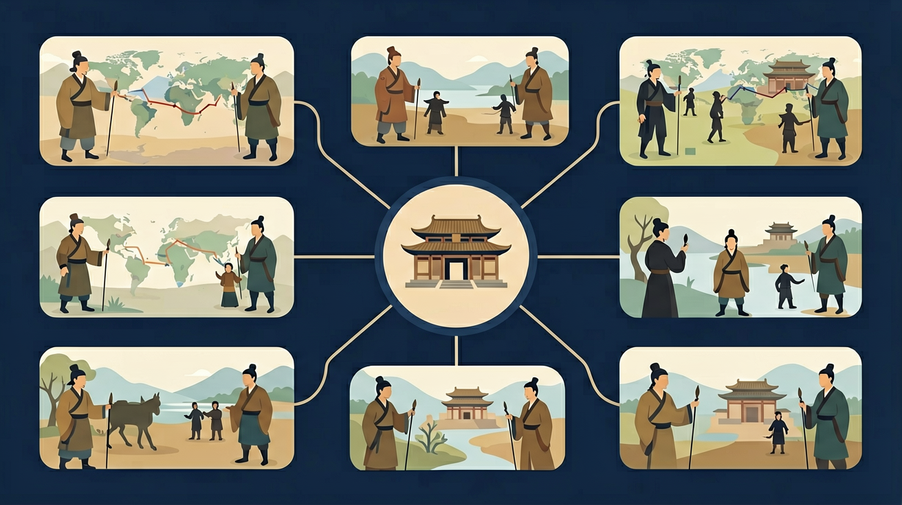

东周分为春秋、战国两个阶段。春秋时期，王室衰微，诸侯争霸，分封制度渐趋瓦解。战国时期，铁农具和牛耕的推广，促进了农业发展。各诸侯国的变法推动了社会进步，思想文化出现了“百家争鸣”的繁荣局面。

🎯 能说出春秋五霸与战国七雄的名称及地理位置
🎯 能分析商鞅变法对秦国强大的关键作用
🎯 能比较儒家、法家、道家核心思想的差异
❓ 为什么说春秋战国是'百家争鸣'而不是'一家独大'？
❓ 战国七雄打架为什么最后是秦国赢了？
❓ 孔子周游列国真的像旅游那么爽吗？
学完这一课，这些问题你都能自信地回答。
下列哪项是春秋时期的显著特征？
商鞅变法中'军功授爵'直接打击了？
春秋战国是初中历史的重要内容。东周分为春秋、战国两个阶段。春秋时期，王室衰微，诸侯争霸，分封制度渐趋瓦解。战国时期，铁农具和牛耕的推广，促进了农业发展。各诸侯国的变法推动了社会进步，思想文化出现了“百家争鸣”的繁荣局面。
通过了解这一时期的生产力水平和社会关系的变化，初步理解春秋时期诸侯争霸局面的形成、战国时期商鞅变法等改革和“百家争鸣”局面的产生。
点击时代/图层按钮切换地图；悬停边界，点击城市标记查看说明。
把卡片拖到核心概念 / 方法技能 / 应用情境 / 常见误区。
拖完 4 项后自动判分。
迁移任务：找一道与「春秋战国」相关的练习题或生活情境，用本课方法完整解答一遍。
春秋诸侯争霸、战国兼并战争推动社会大变革：铁器牛耕推广，各国变法图强；思想上出现儒墨道法等百家争鸣。这一时期既动荡又充满创新，为秦汉统一准备了条件。
复制提示词到 AI 学伴，生成「春秋战国」的时间轴或事件提纲；也可以上传你手绘的示意图，请 AI 学伴点评。
复制后可粘贴到 AI 学伴继续对话。
春秋战国时期，哪一学派主张“无为而治”？
探究春秋战国时期社会变革的主要表现及其对中国历史的影响。
经济看铁器牛耕，政治看变法与兼并，思想看诸子主张。评价变法要联系富国强兵目标。
常见误区：常见误区是只记战争故事，忽视变法与思想繁荣。
百家争鸣出现的主要背景是？
在当代外交领域，春秋时期的"弭兵之会"（前546年）成为研究国际调停的经典案例。2015年伊朗核问题谈判中，美国学者引用郑国政治家子产的外交策略，强调小国在大国博弈中"以礼斡旋"的智慧，最终促成《联合全面行动计划》的签署。这种基于春秋小国生存智慧的分析，被收录在哈佛大学谈判学课程中。
现代农业科技中的"垄作法"直接源自战国技术革新。陕西泾阳郑国渠遗址考古发现，战国农民已掌握"上农弃亩"的垄作技术，通过田垄沟渠配合使亩产提高30%。中国农科院2021年在黄淮海平原推广的"智慧垄作"系统，正是结合战国农书《吕氏春秋·上农》记载与现代传感器技术，使小麦节水效率提升27%。
企业管理中的"墨家组织模式"应用令人意外。日本丰田汽车"年功序列"制度借鉴了墨子"尚同"思想中的层级报告机制，而海尔集团"人单合一"模式则吸收战国时期"四民分业"的专业化理念。据《亚洲管理学报》统计，全球500强中12%的企业在团队建设中参考了《墨子·备城门》记载的守城分工体系。
问题一：为什么说"三家分晋"（前403年）是春秋进入战国的关键转折？从政治制度演变角度分析，晋国卿大夫架空国君的现象，与西周分封制的设计初衷有何本质区别？注意比较春秋时期"尊王攘夷"的齐桓公（前685-前643在位）与战国时期"称王"的魏惠王（前369年称王）在权力来源上的差异。
问题二：铁器推广与土地制度变革如何形成正向循环？结合河北易县燕下都遗址出土的V型铁犁铧（前4世纪）与《商君书·垦令》记载的"废井田"政策，思考生产工具改进怎样突破"千耦其耘"的集体劳作模式。可以对比西周"一夫百亩"的授田标准与战国李悝"尽地力之教"对个体农户的激励差异。
当我们观察周平王东迁洛邑（前770年）时的青铜器"毛公鼎"铭文，会发现周王室仍保持着"普天之下莫非王土"的威严。但接着看春秋时期的"王子午鼎"（前6世纪楚国造），其僭越的七鼎规格和蟠螭纹饰，已暴露诸侯挑战礼制的野心。这种变化不是突然发生的，齐桓公"尊王攘夷"的葵丘会盟（前651年）表面维护周礼，实则用"诸侯毋以妾为妻"等盟约条款，悄悄取代了周天子的立法权。
随着铁器技术从块炼铁发展到铸铁（前5世纪），农业生产呈现爆发式增长。山西侯马晋国遗址出土的战国铁锛，配合牛耕技术使单个农户耕作面积从西周时期的20亩跃升至100亩。这种生产力跃迁最后彻底瓦解了井田制，《孟子》记载的"暴君污吏必慢其经界"正是描述战国初期（前5世纪末）土地私有化浪潮。当商鞅在秦国推行"名田制"（前359年）时，军事制度也随之变革，云梦睡虎地秦简记载的"军功爵"系统，完全颠覆了西周"世卿世禄"的贵族体系。
思想领域的演变同样具有连贯性。孔子周游列国（前497-前484）时强调"正名"，实质是要恢复春秋初期的等级秩序；而到战国中期的孟子（前372-前289）已大谈"民贵君轻"，反映士人阶层对新型君臣关系的思考；最终荀子（前313-前238）的"性恶论"为法家提供理论基础，这种从道德教化到制度约束的思想转变，恰恰对应着从春秋宗法社会向战国官僚国家的历史进程。
第一个常见错误是将春秋五霸与战国七雄混为一谈。学生常误认为齐桓公、晋文公等春秋霸主与后来的秦、楚等战国强国属于同一时期。这种混淆源于对东周两阶段特征差异理解不足。实际上，春秋时期（前770-前476）的霸主仍以"尊王攘夷"为旗号，而战国（前475-前221）的七雄已完全抛弃周王室，典型如秦灭周赧王时其他诸侯毫无反应。
第二个错误是低估铁器革命的颠覆性。部分学生认为铁农具只是青铜器的简单升级，这是对技术代际差异的误解。考古数据显示，春秋晚期（约前6世纪）块炼铁技术出现后，战国时期铁器硬度达到青铜的3倍以上。河北易县燕下都遗址出土的战国铁锄，其耕作效率比青铜耒耜提升近5倍，直接推动"废井田、开阡陌"的土地制度变革。
第三个误区是片面理解"百家争鸣"。学生往往把诸子百家看作同时出现的学派竞争，实则各学派有鲜明时代烙印。儒家"克己复礼"产生于春秋礼崩乐坏之际（孔子生于前551年），而法家"不期修古"的主张要到战国中后期（商鞅变法在前359年）才成熟，两者相差近200年，反映社会从宗法制度向中央集权的演变。
先独立作答，再点选项查看对错与错因。
春秋战国时期，哪一项技术革新显著提高了农业生产效率？
春秋战国时期，哪一学派主张“兼爱非攻”？
战国时期，哪一事件标志着秦国的崛起？
春秋时期，诸侯国之间的争霸战争被称为____。
答案：争霸战争
春秋时期，诸侯国之间的争霸战争是这一时期的主要特点之一。
战国时期，秦国通过____变法实现了国力的显著提升。
答案：商鞅
商鞅变法使秦国国力大增，为后来的统一奠定了基础。
（中考题）出土战国铁农具分布图最能说明？
如果班级采用'墨家'管理方式，会强调？
秦国统一货币'圆形方孔钱'寓意对应？
✅ 孔子（前551-前479）生活在春秋末期
💡 将'百家争鸣'时间范围扩大化
✅ 前者是春秋齐桓公策略，后者是战国范雎策略
💡 未区分两个时期战略特点
口诀：春秋五霸齐晋楚，战国七雄秦最虎，商鞅变法打基础
类比：就像班级里有人靠成绩当班长（齐桓公），有人靠拳头当老大（秦国）